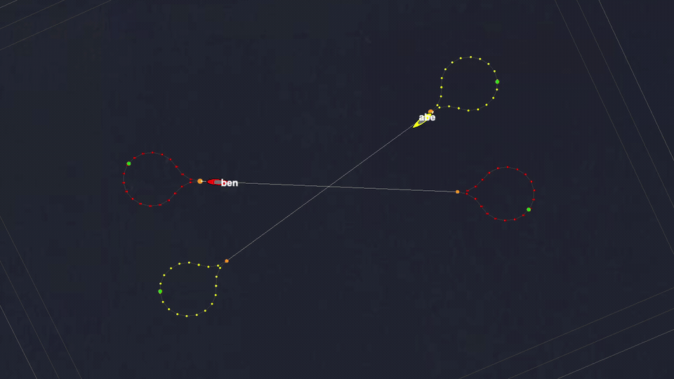
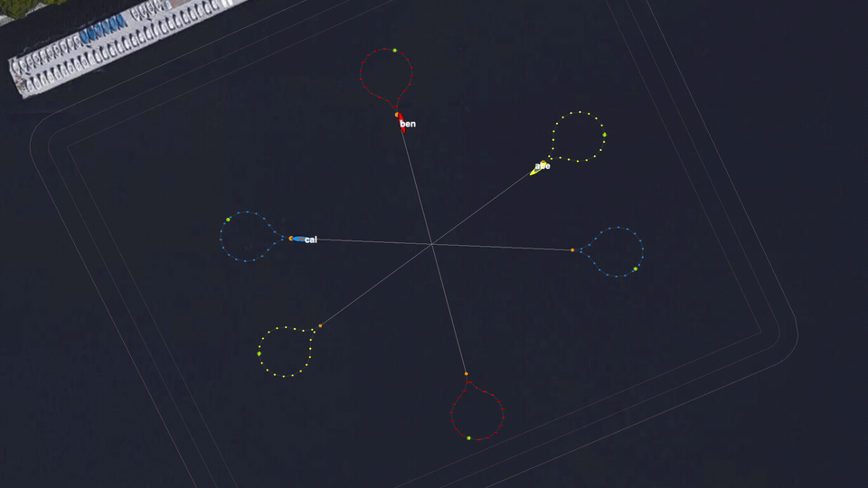

Stem Mission
Baseline scenario context
The stem mission creates sustained two- or three-vehicle COLREGS encounters. Cases adjust traffic density and duration to test whether safe spacing holds beyond a single isolated encounter.
Performance
Performance tests for sustained COLREGS pressure. These cases run repeated multi-vehicle interaction and grade safe spacing, completion, warning cleanliness, and runtime bounds.
Stem Mission
The stem mission creates sustained two- or three-vehicle COLREGS encounters. Cases adjust traffic density and duration to test whether safe spacing holds beyond a single isolated encounter.
Examples


Case Matrix
baseline_colregs_pass
Covers baseline colregs expected pass.
dense_colregs_pass
Covers dense colregs expected pass.
endurance_colregs_pass
Covers endurance colregs expected pass.